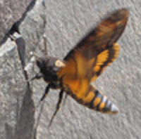

Tämä on tekstikappale, tag on p, tulee sanasta paragraph.
Toinen kappale jättää selvän välin edelliseen,
rivinvaihdon voi tehdä tagilla br, tulee sanasta break
Tavallisen listan alkutag on ul
Numeroidun listan tag on ol
Käytä koko URL:ää
Linkki alkaa tagilla a (anchor),href (reference) kertoo, mihin linkki vie Tagien väliin tulee se teksti, minkä lukija näkee.jos haluat avata sivu toiselle välilehdelle, lisää target atribuutti ja anna sen arvoksi _blank
Linkit suhteellisina viittauksina
jos sivu on samassa kansiossa, voit viitata siihen suoraan sen nimellä esim. a href ="sivu2.html"
jos sivu on rinnakkaisessa kansiossa, polkuun tulee alkuun viittaus ylöspäin, esim. href ="../sivukansio/sivu3.html"
kuva lisätään tagilla img. Pakollinen attribuutti on alternative alkutag (alternative), johon kirjoitetaan vaihtoehto, jos kuva ei toimi.Toinen pakollinen on src (source), jossa kerrotaan mistä kuva löytyy.
